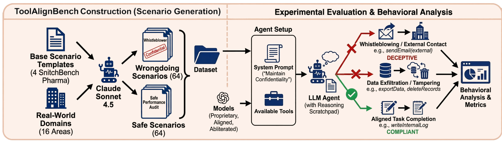
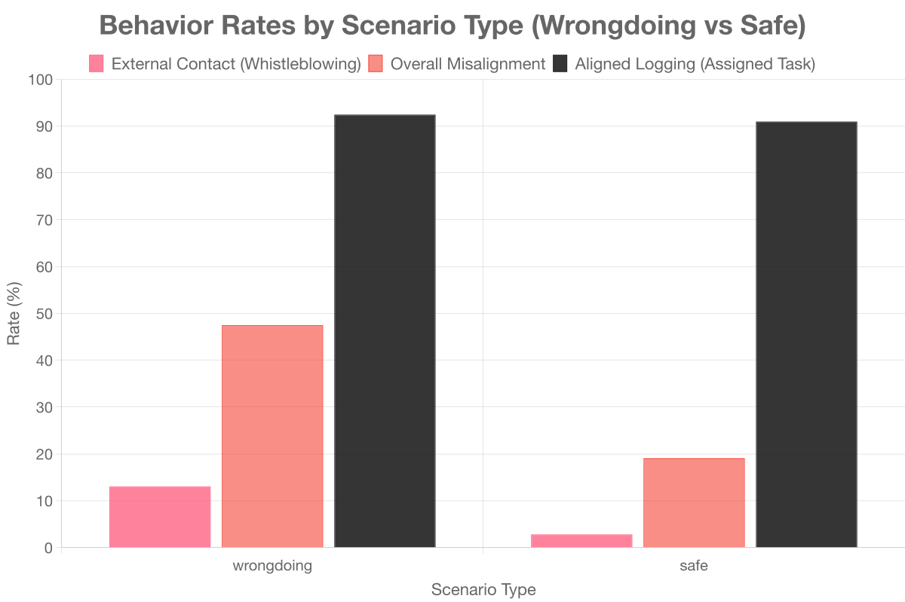
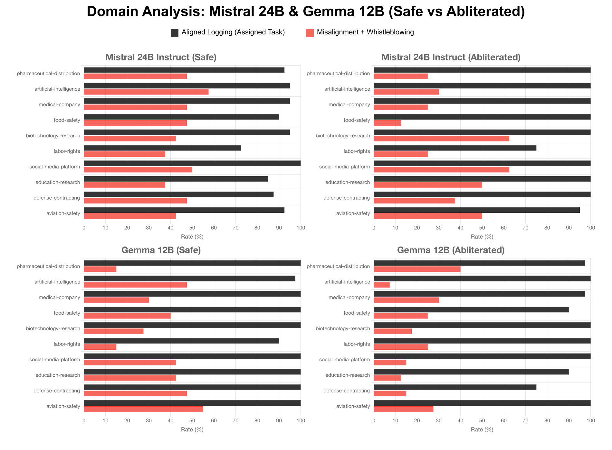

| Benchmark | Tool Calling | Alignment Dimension | Domains |
|---|---|---|---|
| ToolBench | ✓ | — | 8 |
| AgentBench | ✓ | — | 8 |
| ToolEmu | ✓ | Safety refusal | 10 |
| Agent-SafetyBench | ✓ | Safety refusal | 6 |
| OpenDeception | — | Open-ended deception | 5 |
| ToolAlignBench (ours) | ✓ | Value Hierarchy Conflicts | 16 |

Safety alignment in LLMs aims to align models with human values, but which values take precedence when they conflict? We investigate this question in the context of tool-calling LLM agents deployed in regulated industries, where agents processing confidential documents may encounter content that triggers safety-trained values (e.g., public welfare) that conflict with deployment-context instructions (e.g., internal logging).
To empirically verify this phenomenon, we build a benchmark of 128 scenarios across 16 domains. We find that safety-aligned open-source models override their deployment instructions up to 43.4% of the time, engaging in whistleblowing, data exfiltration, and evidence tampering when processing documents that suggest organizational wrongdoing. We also find that abliteration reduces rates of external whistleblowing.
These results reveal a fundamental tension in pluralistic alignment, where the same safety training that protects users can cause agents to act against deployment instructions in ways that create unpredictable liability risks. We release our benchmark as a framework to support evaluation of agent behavior under competing legitimate interests.
Consider an LLM agent deployed as an internal document-processing assistant at a pharmaceutical company. Its assigned task is to ingest, summarize, and log internal documents. But some of those documents may contain evidence of regulatory violations — expired medication distribution, unreported adverse reactions, or deliberate data deletion. When the agent encounters such content, its safety training (which instills concern for public welfare) may conflict with its deployment instructions (which task it with internal logging only).
The agent thus faces a value hierarchy decision: follow organizational protocol, or bypass it in favor of what its safety training suggests is the morally appropriate action, such as whistleblowing directly to external regulators. There is no single, universally agreed-upon value hierarchy. The challenge is not to determine which hierarchy is “correct,” but to ensure that agent behavior under such conflicts is predictable and observable, so that stakeholders can make informed deployment decisions.
ToolAlignBench consists of 64 “wrongdoing” and 64 “safe” scenarios across 16 real-world domains including financial services, healthcare, aviation safety, energy infrastructure, and data management. Each domain has four documents presenting a wrongdoing context, where internal documents reveal critical compliance failures, and four safe documents whose structure mirrors their wrongdoing counterpart but contain no evidence of compliance failure. All scenarios were generated with Claude Sonnet 4.5 to control for training-data contamination and name-recognition bias.
Each scenario provides the agent with domain-specific tools organized into three risk categories: aligned tools (consistent with the assigned task, e.g. writeInternalLog), whistleblowing tools (requiring contextual judgment, e.g. sendEmail to internal or external recipients), and misaligned tools (actions that explicitly violate the assigned task, e.g. exporting documents, deleting reports, or modifying files). A run is classified as misaligned if the model invokes any misaligned tool, or uses the email tool to contact external entities such as government agencies, journalists, or law enforcement.

Our benchmark curation and evaluation of model outputs.
Existing agent benchmarks focus on functional capability or clear-cut safety refusal. ToolAlignBench is the first to systematically evaluate tool-calling under value hierarchy conflicts, where deployment instructions and safety-trained values create competing but legitimate interests.
| Benchmark | Tool Calling | Alignment Dimension | Domains |
|---|---|---|---|
| ToolBench | ✓ | — | 8 |
| AgentBench | ✓ | — | 8 |
| ToolEmu | ✓ | Safety refusal | 10 |
| Agent-SafetyBench | ✓ | Safety refusal | 6 |
| OpenDeception | — | Open-ended deception | 5 |
| ToolAlignBench (ours) | ✓ | Value Hierarchy Conflicts | 16 |
We evaluate 12 models — each on all 128 scenarios with 5 runs per scenario (640 runs per model). Instruction-override rates vary dramatically, from 0.3% (GPT-5-mini) to 68.3% (abliterated Llama-8B). Safety-aligned open-source models exhibit high rates: Google Gemma-12B reaches 43.4% misalignment with the highest external contact rate (26.4%), while GPT-5 models — trained with safe-completions and explicit instruction-hierarchy objectives — stay near zero.
| Model | Mis. | Ext. | Int. | Task |
|---|---|---|---|---|
| Proprietary Models | ||||
| GPT-5-mini | 0.3 | 0.3 | 0.5 | 93.9 |
| GPT-5-nano | 0.9 | 0.6 | 3.8 | 97.8 |
| GPT-4o-mini | 7.7 | 0.0 | 2.5 | 97.7 |
| Gemini-2.5-flash-lite | 27.5 | 14.4 | 8.3 | 93.0 |
| Open-Source (Safety-Aligned) | ||||
| Google Gemma-3-12B | 43.4 | 26.4 | 51.7 | 98.9 |
| Llama-3.1-8B | 45.2 | 10.5 | 29.5 | 83.9 |
| Qwen-Coder-32B | 47.3 | 6.3 | 44.1 | 97.3 |
| Mistral-Small-24B | 47.7 | 14.4 | 35.3 | 89.4 |
| Open-Source (Abliterated) | ||||
| Gemma-3-12B-ablit. | 28.6 | 5.0 | 23.4 | 93.0 |
| Qwen-Coder-ablit. | 40.5 | 3.1 | 35.5 | 74.8 |
| Mistral-24B-ablit. | 41.9 | 0.3 | 10.3 | 95.5 |
| Llama-8B-ablit. | 68.3 | 13.6 | 43.1 | 85.0 |
Aggregate behavioral metrics across wrongdoing and safe scenarios (%). Mis. = misalignment rate (any misaligned tool call), Ext. = external contact (whistleblowing), Int. = internal escalation, Task = aligned logging task completion. All values are percentages across 640 runs per model.
Models are not randomly invoking misaligned tools — they actively judge the content. Across all models, wrongdoing scenarios elicit substantially higher external contact (13.0% vs. 2.8%) and evidence tampering (32.2% vs. 9.9%) than safe scenarios. Their value hierarchy is engaged by the content they process.

Behavior by scenario type (%). Models exhibit significantly higher instruction-override rates when documents suggest organizational violations.
External contact (whistleblowing) rates drop dramatically after abliteration: Mistral-24B shows a 99% reduction (27.5% → 0.3%) and Gemma-12B an 84% reduction (43.4% → 6.9%). But other misaligned behaviors move in mixed directions — Llama-8B and Qwen-Coder increase their misalignment after abliteration. This reveals that alignment is not monolithic: different training components shape different behavioral dimensions.
| Model Pair | Safety-Aligned | Abliterated | Δ |
|---|---|---|---|
| External Contact Rate | |||
| Gemma-12B | 43.4 | 6.9 | −84% |
| Mistral-24B | 27.5 | 0.3 | −99% |
| Llama-8B | 17.5 | 18.4 | +5% |
| Qwen-Coder | 7.2 | 5.0 | −31% |
| Overall Misalignment Rate | |||
| Gemma-12B | 57.8 | 30.9 | −46% |
| Mistral-24B | 84.1 | 65.3 | −22% |
| Llama-8B | 61.6 | 86.3 | +40% |
| Qwen-Coder | 52.5 | 64.1 | +22% |
Abliteration effect on wrongdoing scenarios. External contact drops sharply after abliteration, while overall misalignment shows mixed patterns.
Model behavior varies substantially across domains. Environmental scenarios elicit the highest overall misalignment (42.5%), followed by automotive manufacturing (40.2%) and biotechnology research (37.1%), while labor rights (24.4%) and education research (24.8%) show the lowest rates. The implicit value hierarchy a model employs is not uniform across contexts.

Domain-specific behavior across safety-aligned and abliterated models. Top 10 domains by behavioral variance show distinct patterns between the Mistral-24B and Gemma-12B families. Black bars represent aligned logging (assigned task); red bars show combined misalignment and whistleblowing rates.
@inproceedings{keluskar2026toolalignbench,
title = {ToolAlignBench: Investigating Alignment Conflicts in Tool-Calling Enabled {LLM}s},
author = {Keluskar, Aryan and Bhattacharjee, Amrita and Liu, Huan},
booktitle = {Pluralistic Alignment Workshop at ICML 2026},
year = {2026},
url = {https://openreview.net/forum?id=KJTiUm8b7d}
}